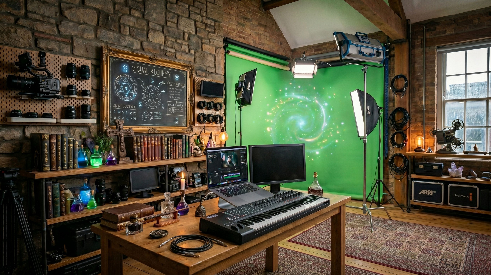
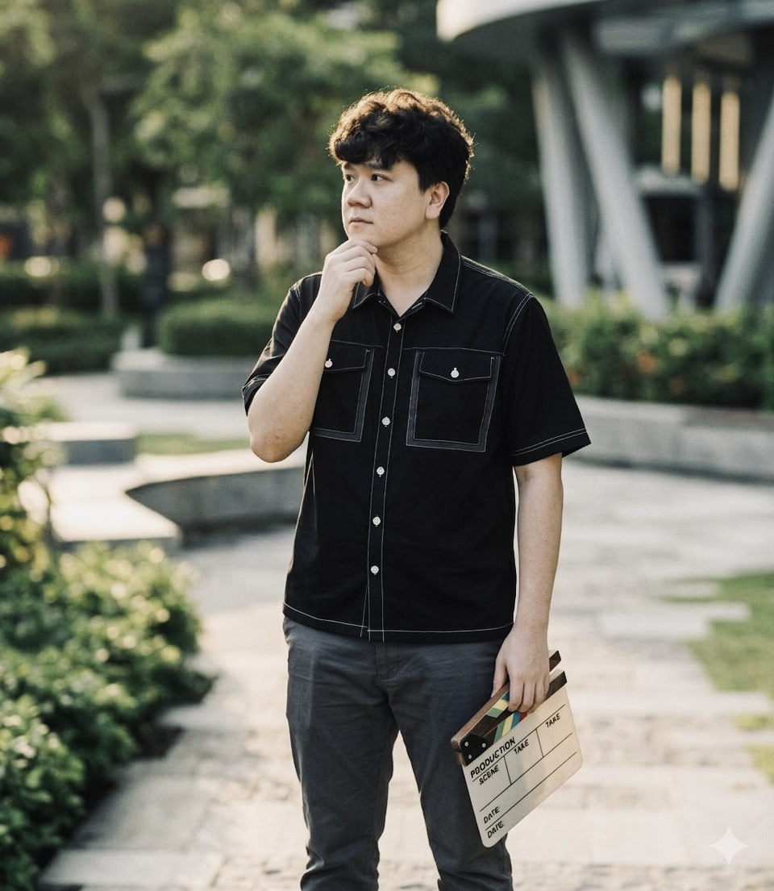
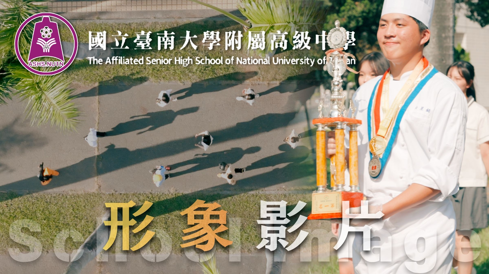
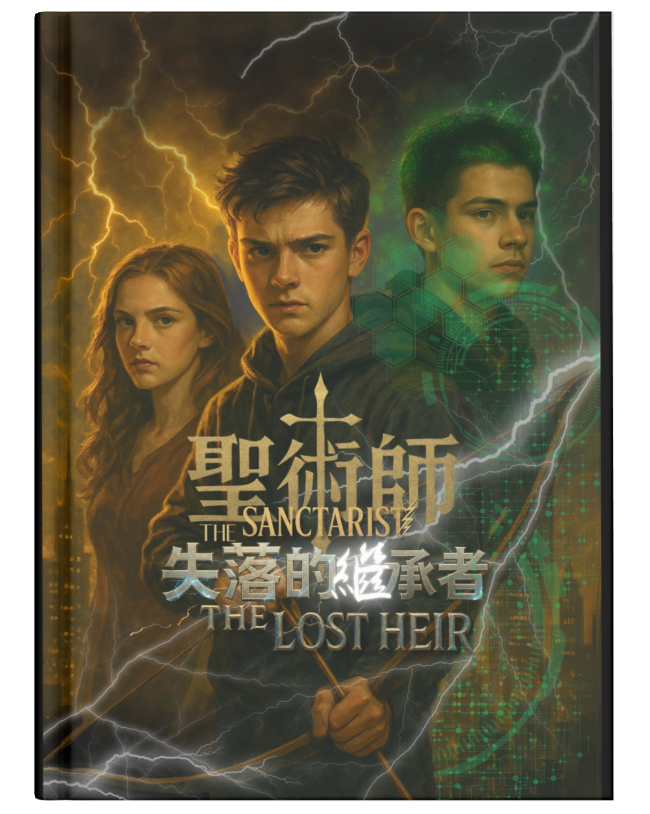
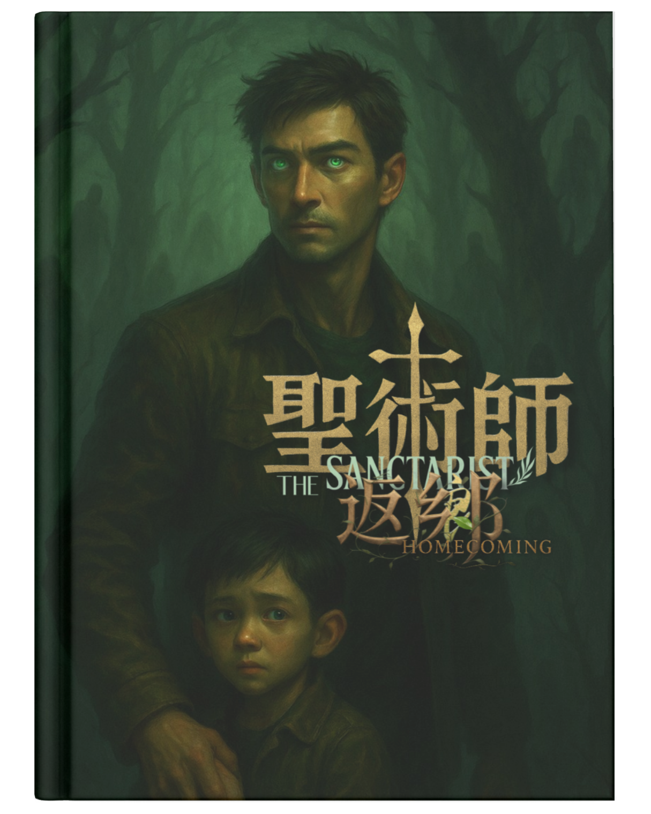
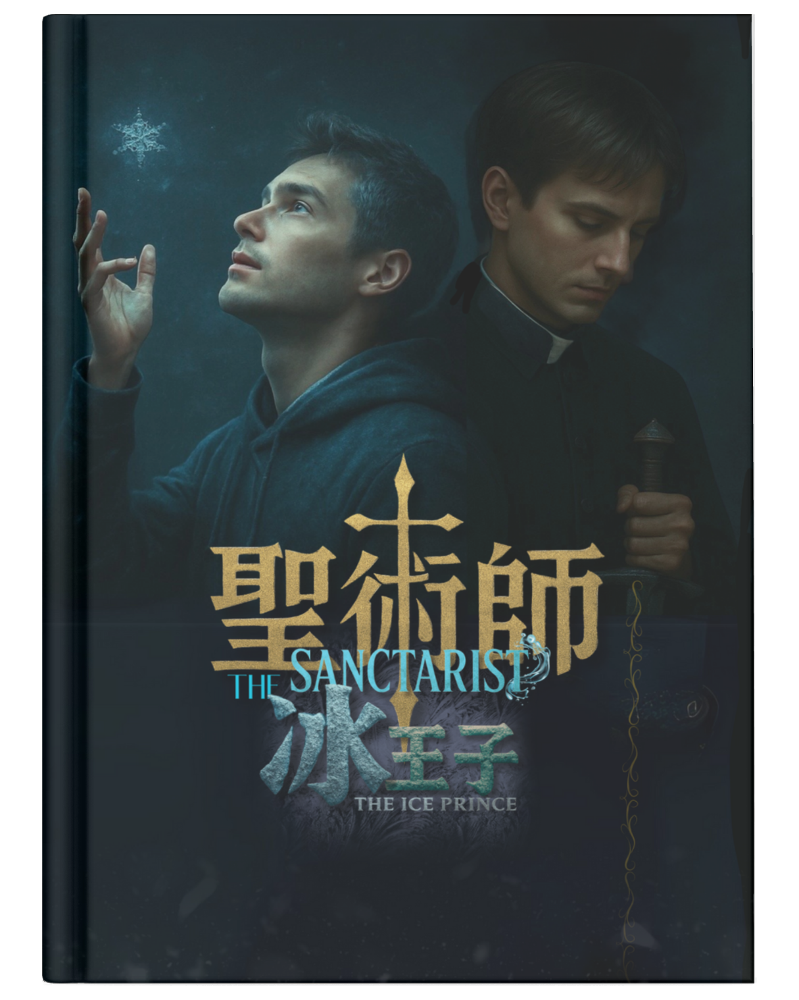
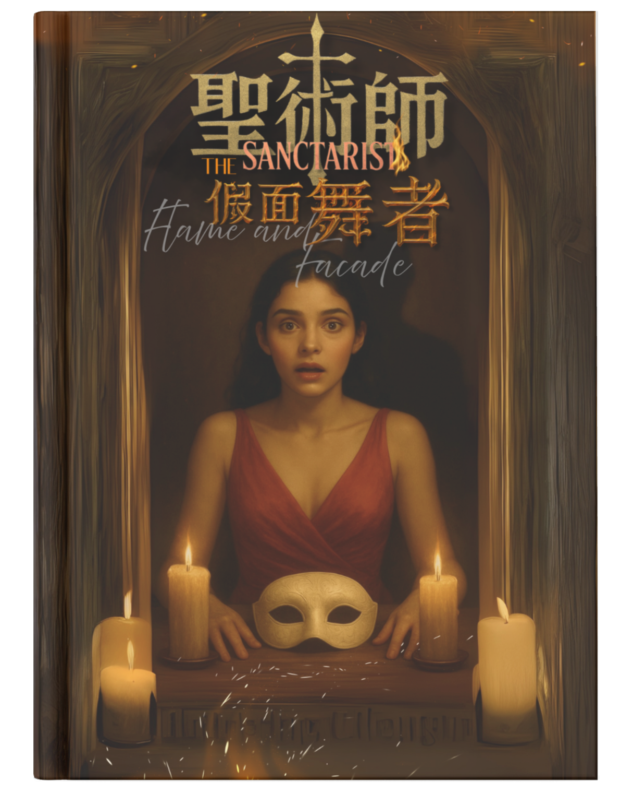
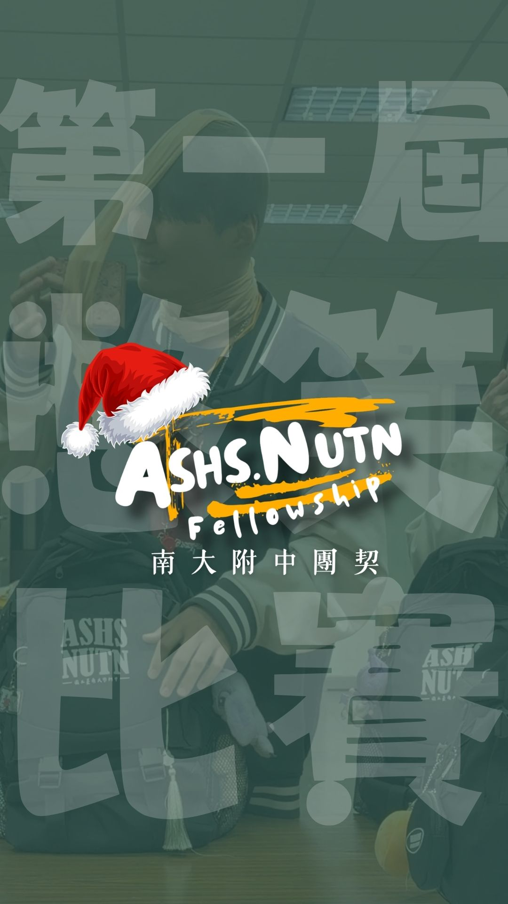
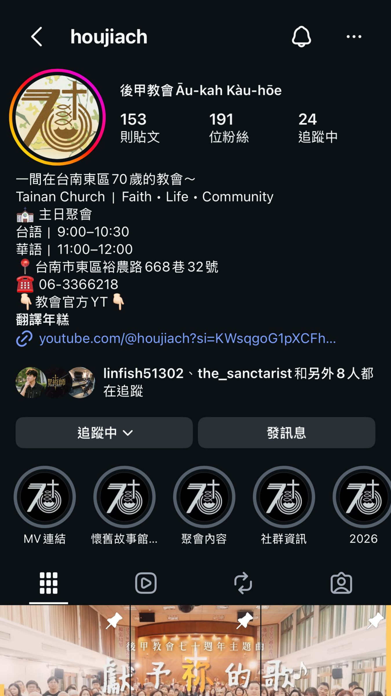
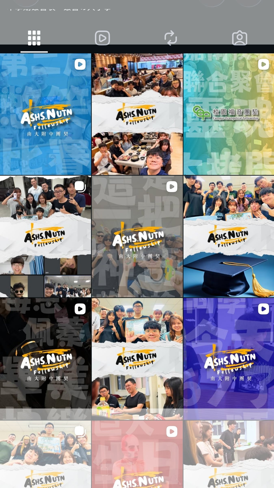

「以『創作』，回應祂的『創造』。」
融合電影敘事、感性配樂與奇幻靈魂，為世界打造療癒心靈的藝術作品。

專案自由導演 ・ 配樂師 ・ 聲音設計師 ・ 活動企劃 ・ 直播主
我擅長以「聽覺」為創作發想原點，將過去配樂師對節奏的精準掌控，融入電影化的影像結構。憑藉對劇組分工的熟稔與社群趨勢的洞察，致力於在速食影音時代，創作出一眼入心、聲色兼具的獨特影像作品。
「藝術，是上帝賜給我們最溫柔的白魔法。我們攜手全宇宙最強的三大股東，將屬天靈感編織成光影，在冷漠的世界裡施展奇蹟，讓每個看見作品的人，都能遇見神的榮美與愛。」
我創立了「白魔法藝術工作室」，致力於與世界接軌，透過影像與聲音的編織，將無形的信仰轉化為有形的溫柔。我深信創作就是一場傳遞正向能量的魔法，在節奏與畫面的流轉間，為觀者打造療癒心靈的藝術作品。
「音樂是我展現魔法的起點。在頻率與節奏的編織中，我捕捉那些微小而深刻的情緒片段。」
與金馬男配角 曾敬驊 合作
完成馬來西亞微電影《KAWAN》主題曲，以溫暖動人的民謠旋律勾勒深厚情感。
與資深女藝人 趙小僑 合作
一同合作完成音樂劇微電影《起司蛋糕》主題曲，以多元管弦樂編曲打造詭譎奇幻的音律。
與導演 李冠賢 共同組團
共同創作多首原創音樂作品，推動當代民謠音樂復興與溫暖創作。
「布萊音樂工作室」現已正式併入白魔法藝術工作室宇宙。這裡沉澱了歷年原創聲學創作、LIVE 系列與奇幻風格配樂，持續為視覺與靈魂提供最純粹的音樂能量。
「從聽覺出發，我將配樂對節奏的精準掌控，轉化為視覺的敘事律動。」

以導演身份回到母校服務。運用短影音輕快節奏與電影鏡頭，打造全新校園品牌形象影片。
堅信影像擁有修補世界的力量，在作品中植入正向生命力，帶來溫暖且具啟發性的感官體驗。
以溫暖細膩的鏡頭語言記錄跨越時光的校園記憶，展現「百世榮美」的榮耀歷程，獻上最深情的影像歸宿。
「這是我的創作宇宙中心，也是我影視生涯中最大的野心。」
改編自《聖經》寓言的原創奇幻作品系列，融合信仰、惡魔與命運交錯的史詩冒險。

The Lost Heir
改編自《聖經》奇幻篇章。17歲少年紫克·安德烈發現家中密室祕密，並揭開了隱匿多年的秘密與「翼聖術師」使命...

Homecoming
改編自經典寓言〈浪子回頭〉。36歲木之聖術師單親爸爸-景皓，為救突患怪病的兒子-昱鎧重返傷心之處...

The Ice Prince
冰霜元素聖術師降臨，冰封封印與信念抉擇交織的史詩新篇章...

Flame & Facade
火焰與面具下的秘密真相，揭開聖術師世界觀最震撼的暗黑轉折...
「在快節奏的活動現場，我可以證明影像的靈魂不在於器材的規格，而在於導演的眼界。與校園同步，以藝術回應祂的呼召。」
在學生營會的快播快剪作品中，全程採用手機進行拍攝與剪輯。憑藉配樂師對情感節奏的敏銳與導演的敘事直覺，打造最溫暖的生命回顧。
結合實務影音技能與福音傳播戰略，幫助教會將感動轉化為高觸及社群影響力。
專為教會/宣教同工設計！快速釐清短影音核心邏輯、器材準備與福音轉化策略，適合想嘗試轉型新媒體的團隊搶先預約。
透過短影音社群，幫助大家更能體會牧師講道的重點，發現神的話一點都不無聊，還很重要！
每一次破冰大家都笑得開心，但這份喜悅不只可以分享，更能讓更多人有機會聽見福音！
營會最後的回顧總是只放照片？不只教你拍，也教你如何在極短時間內做出美的回顧影片！
感謝您的參觀，祝您平安順心！
無論是導演專案諮詢、電影與短片配樂合作、活動快剪紀錄、教會短影音免費課程預約，或是《聖術師》小說 IP 改編合作，都歡迎隨時私訊 IG 或直接來電聯繫。
社群媒體魔法排版與短影音
「每一個活動紀錄再以短影音形式上 Reels，更靈活增加觸及率！結合實戰數據分析與『白魔法』溫柔敘事，種下正向能量種子。」

三連一式版面設計 & 美學排版
為品牌與教會帳號量身規劃精選分類圖示、風格一致的三連版面與美學排版，塑造無可取代的專業質感。


短影音企劃設計與趨勢剪輯
從腳本企劃、現場拍攝到聽覺對點剪輯，精準掌握前 3 秒黃金留存率，將信仰與品牌精神自然融入社群熱門話題。
福音與品牌視覺數據化轉化
曾經深耕網紅電商團隊三年的實戰經驗，深刻理解社群脈絡。視覺包裝不只是呈現美感，更是數據轉化與品牌影響力的橋樑。